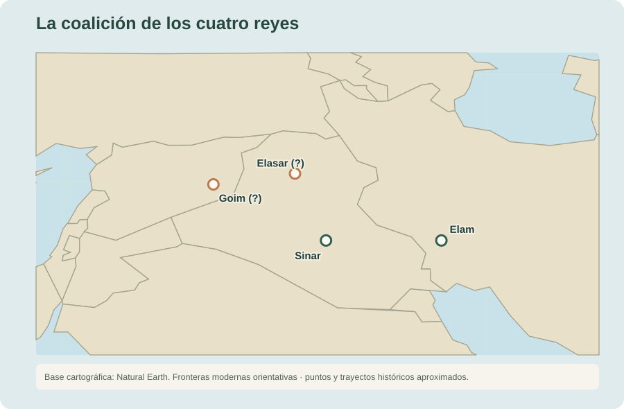
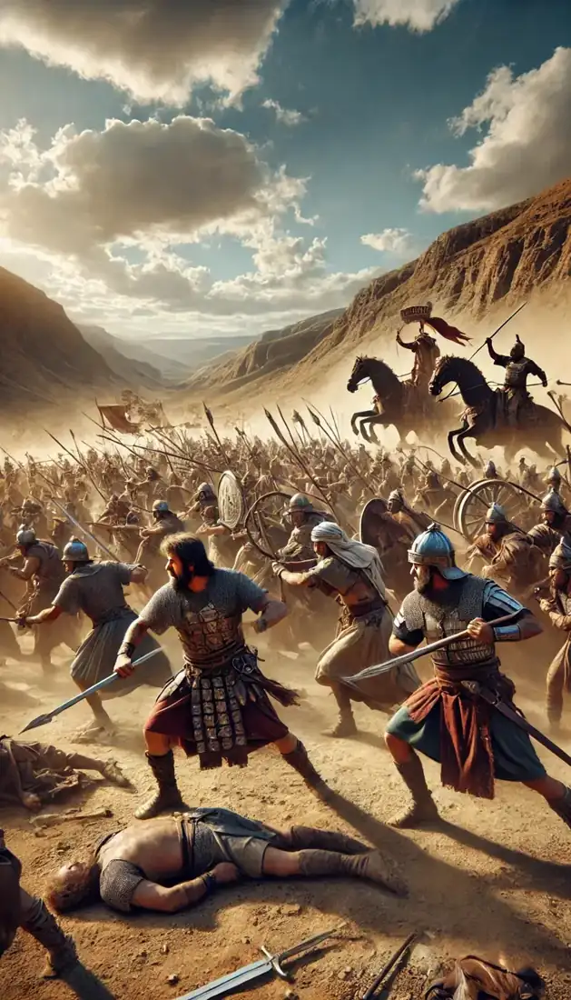
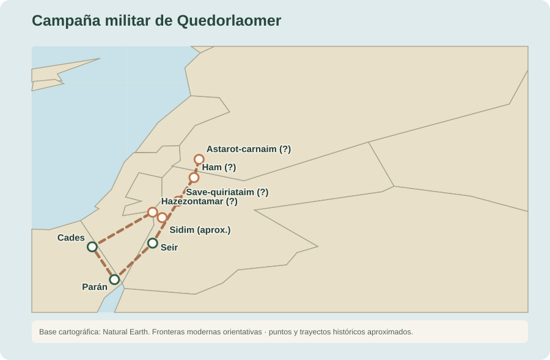
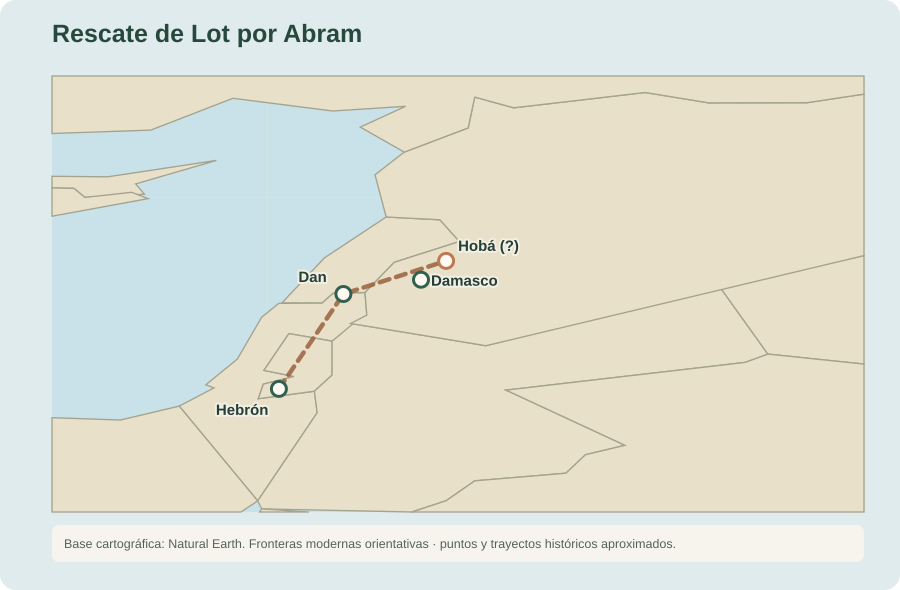

14:1 Sucedió en los días de Amrafel, rey de Sinar; Arioc, rey de Elasar; Quedorlaomer, rey de Elam; y Tidal, rey de Goim,
14:2 que estos hicieron guerra contra Bera, rey de Sodoma; contra Birsa, rey de Gomorra; contra Sinab, rey de Adma; contra Semeber, rey de Zeboim; y contra el rey de Bela, la cual es Zoar.
14:3 Todos estos se juntaron en el valle de Sidim, que es el Mar Salado.
14:4 Doce años habían servido a Quedorlaomer, y en el decimotercero se rebelaron.94

14:5 Y en el año decimocuarto vino Quedorlaomer, y los reyes que estaban de su parte y derrotaron a los refaítas en Astarot-carnaim, a los zuzitas en Ham, a los emitas en Save-quiriataim,
14:6 y a los horeos en el monte de Seir, hasta la llanura de Parán, que está junto al desierto.
14:7 Y volvieron y vinieron a En-mispat, que es Cades, y devastaron todo el país de los amalecitas y también al amorreo que habitaba en Hazezontamar.95
14:8 Y salieron el rey de Sodoma, el rey de Gomorra, el rey de Adma, el rey de Zeboim y el rey de Bela, que es Zoar, y ordenaron contra ellos batalla en el valle de Sidim; esto es, contra
14:9 Quedorlaomer, rey de Elam; Tidal, rey de Goim; Amrafel, rey de Sinar; y Arioc, rey de Elasar: cuatro reyes contra cinco.

14:10 El valle de Sidim estaba lleno de pozos de asfalto y cuando huyeron los reyes de Sodoma y Gomorra, algunos cayeron allí, y los demás huyeron al monte.96
14:11 Y tomaron toda la riqueza de Sodoma y Gomorra, junto con todas sus provisiones, y se fueron.
14:12 Tomaron también a Lot, hijo del hermano de Abram, que moraba en Sodoma, y sus bienes, y se fueron.

14:13 Y vino uno de los que escaparon, y lo anunció a Abram, el hebreo, que habitaba en el encinar de Mamre el amorreo, hermano de Escol y hermano de Aner, los cuales eran aliados de Abram.
14:14 Oyó Abram que su pariente estaba prisionero, y armó a sus criados, los nacidos en su casa, trescientos dieciocho, y los siguió hasta Dan.9798
14:15 Y cayó sobre ellos de noche, él y sus siervos, y les atacó y les fue siguiendo hasta Hobá, al norte de Damasco.
14:16 Y recobró todos los bienes, y también a Lot, y sus bienes, y a las mujeres y demás gente.

14:17 Cuando volvía de la derrota de Quedorlaomer y de los reyes que con él estaban, salió el rey de Sodoma a recibirlo al valle de Save, que es el valle del Rey.
14:18 Entonces Melquisedec, rey de Salem y sacerdote del Dios Altísimo, sacó pan y vino.99
14:19 Y le bendijo, diciendo: — Bendito sea Abram del Dios Altísimo, creador de los cielos y de la tierra.
14:20 Y bendito sea el Dios Altísimo, que entregó tus enemigos en tus manos. Y le dio Abram los diezmos de todo.100
14:21 Entonces el rey de Sodoma dijo a Abram: — Dame las personas, y toma para ti los bienes.
14:22 Y respondió Abram al rey de Sodoma: — He alzado mi mano a Jehová, Dios Altísimo, creador de los cielos y de la tierra,101
14:23 que desde un hilo hasta una correa de zapato, nada tomaré de todo lo que es tuyo, para que no digas: “Yo enriquecí a Abram”.
14:24 Excepto solamente lo que comieron los jóvenes, y la parte de los varones que fueron conmigo, Aner, Escol y Mamre; los cuales tomarán su parte.102103
Notas del editor
- 94Por lo que se da a entender, Elam, situado en el actual Irán, había sometido a vasallaje a las ciudades del valle de Sidim, esto es, debía pagar tributos al rey de Elam. Sin embargo, después de doce años se negaron a pagar y el rey Quedorlaomer envió una expedición de castigo desde Elam. Eso explicaría el retraso de un año en la toma de acciones. ↩
- 95Los ataques a las tribus periféricas pudieran estar motivados por una necesidad de abastecimiento y de acumulación de un botín que compensara a los aliados de Quedorlaomer. Otra teoría sería la de asegurar la seguridad de la ruta comercial a Canaán, aunque eso deja la duda de por qué no habían sido sometidas con antelación. ↩
- 96La región del mar Muerto es conocida desde la Antigüedad por la presencia de betún o asfalto natural. Sin embargo, no se han identificado con certeza los pozos mencionados en este pasaje. El geoquímico Arie Nissenbaum (2004) propuso que el relato podría referirse a zonas de lodo oscuro y poco consistente, cubiertas por una costra superficial, que quedaban expuestas cuando descendía el nivel del agua. ↩
- 97Como se ha dicho antes, el personal de Abraham incluía empleados especializados como pastores, comerciantes, etc; siervos; familiares y personal de seguridad. Nótese que estos 318 debían ser sólo los aptos para entablar combate. ↩
- 98La ciudad mencionada aquí como Dan se llamaba anteriormente Lais y recibió su nuevo nombre cuando fue conquistada por los descendientes de Dan, según Jueces 18:29. Por tanto, el nombre utilizado en este versículo podría corresponder a una actualización geográfica posterior, destinada a facilitar la identificación del lugar a los lectores. ↩
- 99Salem suele identificarse con Jerusalén por su asociación con Sion en el Salmo 76:2. ↩
- 100Este pasaje resulta enigmático, especialmente para quienes no han leído más allá de este punto. Melquisedec irrumpe en la narrativa sin introducción ni genealogía, un detalle llamativo en un texto donde las líneas de descendencia ocupan capítulos enteros. Se le presenta como "sacerdote del Dios Altísimo" antes de que Dios haya designado formalmente a los sacerdotes o establecido cómo debe rendirse culto. Desde esta posición de aparente misterio, Melquisedec se eleva por encima de nuestro protagonista, Abraham, quien no sólo recibe su bendición, sino que también le entrega el diezmo de todo. Entre los judíos, existen múltiples interpretaciones sobre la figura de Melquisedec, desde un rey cananeo monoteísta hasta una manifestación simbólica de justicia y paz. Sin embargo, el autor de la Carta a los Hebreos en el Nuevo Testamento lo interpreta como una prefiguración de Cristo, el Sacerdote Universal y Eterno, quien bendice al pueblo de Dios con pan y vino. ↩
- 101He jurado ante Dios ↩
- 102na’ar, aunque de forma general significa “varón con una edad comprendida entre la infancia y la madurez”, en este contexto, tiene más sentido como “subalternos o siervos” (cf Gen 18:7 donde la propia RVR60 traduce la misma palabra como “criado”). ↩
- 103Abraham no quiere depender de nadie, sólo de Dios, por eso, rechaza cualquier provisión que no venga de Él. Sin embargo, no quiere imponer su decisión a los demás; por eso asegura el sustento del personal que está a su cargo (los “jóvenes”) y los beficios de sus aliados. ↩